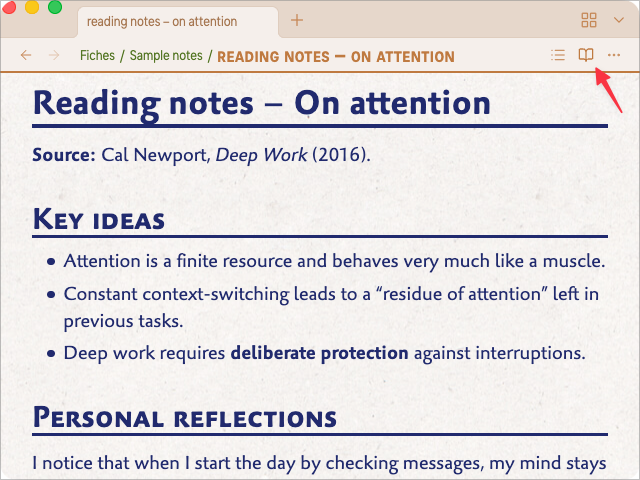
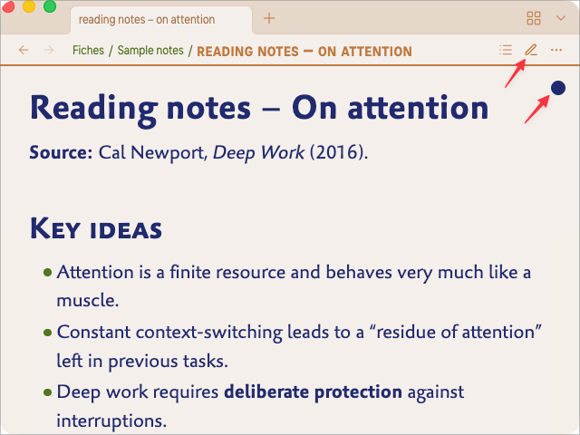
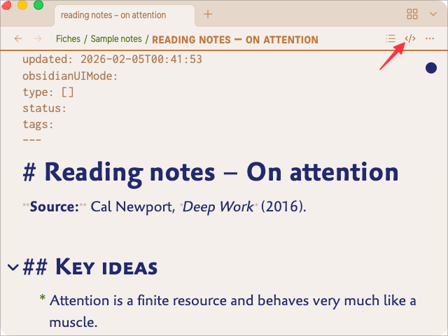

General settings¶
The GENERAL settings group controls global aspects of the theme not specifically geared towards Reading or Writing. These settings are grouped in 2 sections :
- Interface — base size of UI text, the spacing of file listings in side panels, etc.
- Typography — scaling of the headings, vertical rythm, etc.
Interface¶
Base size for the interface texts (px)¶
This value sets the base font size for most interface elements:
- file and folder names in the sidebars
- items in the status bar
- text in modal dialogs (settings, command palette, etc.)
- tab titles at the top of each panel
The default is 16 px, the same as Obsidian’s native theme. On a typical desktop display, it may feel too small — that’s why you can adjust this value.
The theme uses this value as a reference for many UI elements, so most of the interface will scale consistently with this single control.
Tip: to see quickly which parts of the UI are affected, you can temporarily choose a very distinctive interface font in
Settings → Appearance → Fonts → Interface font(for example, Courier).
Spacing for the files listing¶
This option controls the vertical spacing of file rows in the side panels (file explorer, search results in sidebars, etc.), as well as some lists in the settings panel.
You can choose between four presets:
- Tight – rows are compact, useful if you want to see as many files as possible at once.
- Medium (default) – a balanced spacing that works well on most screens.
- Wide – more breathing room between items.
- Very wide – very generous spacing, comfortable on large monitors or when you prefer a relaxed layout.
If you feel that the file list looks too dense or too airy, this is the place to adjust it without changing font sizes. It may be especially useful on touch interfaces of phones and tablets.
Viewing mode icons as status toggles¶
By default, Obsidian shows an open book while you’re editing and a pencil while you’re reading a note. Many people, me included, find this disturbing, even confusing. Olivier’s Theme brings a better solution :
-
an open book is displayed while you’re reading:

-
a pencil is displayed while you’re editin in Live Mode ; furthermore, you have a dot in the upper right corner of your pannel, indicating the note is currently in editing mode :

-
a symbol is displayed while you’re editing in Raw Mode — the “editing dot” is still there, of course :

If you don’t like this feature, you can switch it OFF and revert to the “original” Obsidian behaviour :

Highlight current tab¶
This option adds a stronger visual emphasis to the currently active tab in each panel.
It is especially helpful when:
- you work with several tabs in the same pane, or
- you use stacked tabs and want to see clearly where your keyboard focus is.
When enabled, the active tab uses the accent color and stands out more clearly from background tabs, in addition to the active‑pane header styling.
Hide Title Bar breadcrumb¶
Obsidian can display a breadcrumb in the title bar at the top of the window
(vault name, current note, and sometimes the active plugin view).
If you find this visually noisy or redundant with the tab titles,
turning Suppress the Title Bar breadcrumb ON removes this breadcrumb while keeping the rest of the title bar intact.
This frees a bit of vertical space and gives a cleaner top edge to the window.
Status Bar padding¶
This setting adjusts the padding between the status bar and the screen right and bottom borders.
- With a padding of 0 (zero), the status bar is directly against screen border, liberating space inside the window.
- Any higher values gives space between the status bar and the borders of the screen. It may be aesthetically more pleasant, but it takes space inside the window.
Please note that you can use the Hider plugin and assign a keybord shortcut to its “Toggle status bar” command.
Width of the properties labels¶
This option sets the width of the label column in the Properties panel.
- In the Properties section at the top of notes, increasing this width prevents long property names from being cropped or wrapped in an awkward way. The labels stay fully readable, at the cost of using a bit more horizontal space in the note pane.
- In the Properties sidebar view, decreasing the width makes the labels more compact and frees space for the note content itself. This can be useful if you keep the Properties panel docked in a narrow sidebar and want to maximise the visible text.
If your property names are short, a smaller width keeps everything tight and efficient.
If you rely on longer, descriptive keys, a slightly larger width will usually make the layout clearer and more comfortable to read.
Hide embed titles¶
When you embed — i.e. transclude — a note inside the current note, Obsidian shows the filename of the transcluded note at the top of its content. This is very often disturbing, hence the possibility to suppress this filename with this setting. It is ON by default, meaning that only the content of the transcluded note appears in your current note. Switch OFF this setting if you do want to see the filenames of your transcluded files.
Hide canvas dot pattern¶
In Obsidian’s Canvas view, the default background shows a subtle grid of dots.
Turning Hide canvas dot pattern ON removes this dot pattern and replaces it with a plain background.
This can make complex canvases feel less busy and keeps the focus on cards, notes and connectors rather than on the grid.
If you rely on the dots to align items precisely, leave this option OFF.
If you prefer a quieter visual field, enabling it often feels more “paper‑like”.
Typography¶
Scaling of the headings and subheadings¶
Headings (H1–H6) already have visual cues in Olivier’s Theme: spacing, rules, weight and style.
The Scaling of the headings and subheadings option lets you decide how much their size should increase from H6 up to H1.
There are several presets, including:
- None – all headings use the same size as the body text; hierarchy is indicated only by styling and spacing.
- Minor second / Major second / Minor third / … – musical‑interval based scales that progressively enlarge headings.
- The “Olivier’s ” default gives a clear but not exaggerated hierarchy.
On small laptops or tablets, you may prefer a modest scale (for example Minor second), while on large external monitors a stronger scale can make documents easier to scan.
A simple tuning strategy:
- Open a long note with several levels of headings.
- Change the Scaling of the headings and subheadings preset.
- Stop when the hierarchy feels obvious at a glance, but headings do not dominate the page.
The following two options apply to the Kanban community plugin.
Kanban – General font¶
The General font setting lets you choose the typeface used for column titles and card text in Kanban boards.
You can keep it aligned with your main text font for a unified look,
or pick a more playful font (for example a handwritten style) to give your boards a distinct personality.
Kanban – Size of the cards text (px)¶
This setting controls the text size inside Kanban cards, in pixels.
If your boards feel cramped or hard to read, increase this value slightly.
If you use very dense boards with many cards, decreasing it can help fit more information on screen without scrolling.
Suppress line wrapping within code blocks¶
When this option is ON, code blocks in Reading mode will not wrap long lines:
they will stay on a single horizontal line and can be scrolled horizontally if needed.
This behaviour is often preferable for:
- code samples
- command‑line snippets
- configuration files
When the option is OFF, code blocks wrap like normal text, which can be more comfortable on narrow screens but sometimes makes code harder to read.